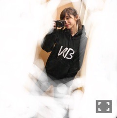

| 2016/11 28 Mon | 斎藤ちはる 心に響く。 |
ちはるーむへようこそ！
昨日のどっち派？のコメントを読んでいたら
どうしてもきのこの山が食べたくなった...
でも買おうと思ってたら忘れちゃった(> <)
きのこの山にもチョコとビスケットを
別々に食べる派と一緒に食べる派で
分かれてたりするんだね...！
知らなかった！
無意識でしたが私は別々に食べる派で、
ビスケットを先に食べて後にチョコを残す派◎
後に楽しみを残しておく派です。
1番最後に美味しいものを食べて
口の中をそれでいっぱいにしてから
ご馳走様をしたい派。
にやり。
---------------------------♡
先日実はKANA-BOONさんの
ライブにお邪魔させていただきました！
ずっと行きたいと思っていて、
やっと時間が合いました( ;o; )
本当に幸せな時間だった...
ずっとにやけた...
気付いたら口ずさんでた...
聞きたいと思っていた
大好きな曲を沢山聞くことができて、
カッコいい演奏を生で
近くで見ることができて、
とても充実した時間でした。
そして歌の力は凄いなと改めて感じました。
声と演奏だけであれだけの数の人の
心の中に響いて感動させられるのって
歌以外にないのではないかというほど。
素敵な歌と演奏が心に響きました。
楽しくて楽しくて笑ったり
歌詞に感動して涙が出そうになったり。
そして私も頑張ろうと思えました。
人の心に響くパフォーマンスを
私もしたいと思います。
そしてグッズのパーカーもゲット◎
とてもカッコいい...

妹もKANA-BOONさん大好きなので
お土産にラババンを買って帰ったら
喜んでたけど、ずるい！と怒られました。笑
そして行って数日経っても
まだ余韻が残っているので、
プレイリストを自分で作って
永遠にループしています。
また行きたいな♪
---------------------------♡
♬ ChihaMusic
「シルエット」KANA-BOONさん
今日はこの曲が聞きたい気分。
聞くだけで体が勝手に動き出してしまう。
それくらい爽快感がある。
でも歌詞はどこか寂しげで。
でも元気が出て。
この矛盾さが心地良い。
"覚えてないこともたくさんあったけど
きっとずっと変わらないものがあることを
教えてくれたあなたは消えぬ消えぬシルエット"
人は変わっていくことも大切だけど
変わらないことも大切だっていうことに
気付かなきゃいけないなと思いました。
今日もChihAnswer募集します！
待ってます(﹡ˆ ˆ﹡)
私の陰に隠れるめーちゃん。
目だけこんにちは。
おやすみ〜
斎藤ちはる